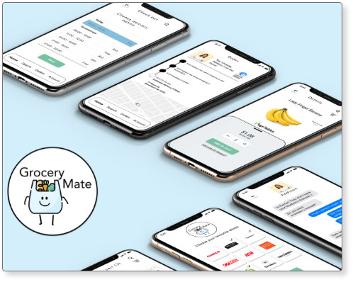

Hello....
Budi Visidagama is a Designer focused on UX design, Visual design and prototyping. A problem solver that design and grow products people love.
Tiny Tails
Tiny Tails Rescue Adelaide Incorporated is a not for profit rescue run by dedicated volunteers helping rescue unwanted dogs & cats and giving them a second chance.
VIEW>>
Grocery Mate
A one-stop-shop grocery order and delivery app for buying groceries online from multiple locations..
VIEW>>
